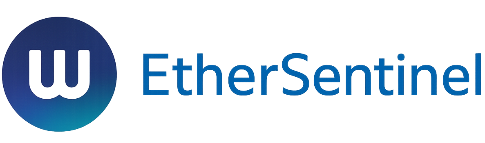

<!-- 统一导航栏组件 - EtherSentinel -->
<!-- 样式定义 -->
<style>
    /* 导航栏统一样式 */
    .unified-navbar {
        background: rgba(10, 14, 26, 0.95);
        backdrop-filter: blur(25px);
        border-bottom: 1px solid rgba(0, 255, 204, 0.2);
        position: fixed;
        top: 0;
        left: 0;
        right: 0;
        z-index: 1050;
        padding: 0;
        height: 80px;
        box-shadow: 0 2px 20px rgba(0, 255, 204, 0.1);
        transition: all 0.3s ease;
    }

    .unified-navbar.scrolled {
        background: rgba(10, 14, 26, 0.98);
        box-shadow: 0 2px 30px rgba(0, 255, 204, 0.2);
    }

    .nav-content {
        display: flex;
        justify-content: space-between;
        align-items: center;
        max-width: 1600px;
        margin: 0 auto;
        padding: 0 2rem;
        height: 100%;
        position: relative;
    }

    .unified-logo {
        font-family: 'Orbitron', monospace;
        font-size: 1.6rem;
        font-weight: 900;
        color: var(--neon-cyan);
        text-shadow: 0 0 20px var(--neon-cyan);
        text-decoration: none;
        display: flex;
        align-items: center;
        gap: 0.8rem;
        transition: all 0.3s ease;
        position: relative;
    }

    .unified-logo::before {
        content: '';
        position: absolute;
        left: -10px;
        top: -10px;
        right: -10px;
        bottom: -10px;
        background: radial-gradient(circle, rgba(0, 255, 204, 0.1) 0%, transparent 70%);
        border-radius: 50%;
        opacity: 0;
        transition: opacity 0.3s ease;
        z-index: -1;
    }

    .unified-logo:hover::before {
        opacity: 1;
    }

    .unified-logo:hover {
        color: var(--neon-cyan);
        transform: scale(1.05);
        text-shadow: 0 0 30px var(--neon-cyan);
    }

    .logo-icon {
        width: 32px;
        height: 32px;
        margin-right: 0.5rem;
        filter: drop-shadow(0 0 8px rgba(0, 255, 204, 0.6));
        border-radius: 50%;
    }

    .nav-menu {
        display: flex;
        gap: 0.5rem;
        list-style: none;
        align-items: center;
        margin: 0;
        padding: 0;
    }

    .nav-item {
        position: relative;
    }

    .unified-nav-link {
        color: var(--text-secondary);
        text-decoration: none;
        font-weight: 500;
        font-size: 1rem;
        padding: 0.8rem 1.2rem;
        border-radius: 25px;
        transition: all 0.3s cubic-bezier(0.4, 0, 0.2, 1);
        position: relative;
        display: flex;
        align-items: center;
        gap: 0.5rem;
        overflow: hidden;
    }

    .unified-nav-link::before {
        content: '';
        position: absolute;
        top: 0;
        left: -100%;
        width: 100%;
        height: 100%;
        background: linear-gradient(90deg, transparent, rgba(0, 255, 204, 0.1), transparent);
        transition: left 0.5s ease;
    }

    .unified-nav-link:hover::before {
        left: 100%;
    }

    .unified-nav-link:hover,
    .unified-nav-link.active {
        color: var(--neon-cyan);
        background: rgba(0, 255, 204, 0.1);
        text-shadow: 0 0 10px rgba(0, 255, 204, 0.5);
        transform: translateY(-2px);
        box-shadow: 0 4px 15px rgba(0, 255, 204, 0.2);
    }

    .unified-nav-link.active::after {
        content: '';
        position: absolute;
        bottom: -2px;
        left: 50%;
        transform: translateX(-50%);
        width: 80%;
        height: 2px;
        background: linear-gradient(90deg, transparent, var(--neon-cyan), transparent);
        border-radius: 2px;
    }

    .nav-icon {
        font-size: 1.1rem;
        transition: transform 0.3s ease;
    }

    .unified-nav-link:hover .nav-icon {
        transform: scale(1.1);
    }

    .nav-right {
        display: flex;
        align-items: center;
        gap: 1.5rem;
        height: 100%;
    }

    .status-indicator {
        display: flex;
        align-items: center;
        gap: 0.6rem;
        padding: 0.6rem 1.2rem;
        background: rgba(0, 255, 204, 0.08);
        border: 1px solid rgba(0, 255, 204, 0.2);
        border-radius: 25px;
        font-size: 0.9rem;
        font-weight: 500;
        transition: all 0.3s ease;
        white-space: nowrap;
        flex-shrink: 0;
        min-width: 120px;
        justify-content: center;
    }

    .status-indicator:hover {
        background: rgba(0, 255, 204, 0.15);
        border-color: rgba(0, 255, 204, 0.4);
    }

    .status-dot {
        width: 8px;
        height: 8px;
        background: var(--neon-cyan);
        border-radius: 50%;
        animation: pulse 2s infinite;
        box-shadow: 0 0 10px var(--neon-cyan);
    }

    @keyframes pulse {
        0%, 100% { 
            opacity: 1; 
            transform: scale(1);
        }
        50% { 
            opacity: 0.7; 
            transform: scale(1.1);
        }
    }

    .user-menu {
        position: relative;
    }

    .user-dropdown-btn {
        background: linear-gradient(45deg, var(--neon-cyan), var(--neon-blue));
        border: none;
        color: #000;
        padding: 0.8rem 1.5rem;
        border-radius: 25px;
        font-weight: 600;
        cursor: pointer;
        display: flex;
        align-items: center;
        gap: 0.5rem;
        transition: all 0.3s ease;
        box-shadow: 0 0 15px rgba(0, 255, 204, 0.3);
        white-space: nowrap;
        flex-shrink: 0;
        height: auto;
    }

    .user-dropdown-btn:hover {
        transform: translateY(-2px);
        box-shadow: 0 5px 20px rgba(0, 255, 204, 0.5);
    }

    .current-user {
        font-weight: 700;
    }

    /* 响应式设计 */
    .mobile-menu-toggle {
        display: none;
        background: none;
        border: none;
        color: var(--neon-cyan);
        font-size: 1.5rem;
        cursor: pointer;
        padding: 0.5rem;
        border-radius: 8px;
        transition: all 0.3s ease;
    }

    .mobile-menu-toggle:hover {
        background: rgba(0, 255, 204, 0.1);
    }

    @media (max-width: 992px) {
        .nav-content {
            padding: 0 1rem;
        }
        
        .mobile-menu-toggle {
            display: block;
        }

        .nav-menu {
            position: absolute;
            top: 100%;
            left: 0;
            right: 0;
            background: rgba(10, 14, 26, 0.98);
            backdrop-filter: blur(25px);
            border-top: 1px solid rgba(0, 255, 204, 0.2);
            flex-direction: column;
            gap: 0;
            transform: translateY(-100%);
            opacity: 0;
            pointer-events: none;
            transition: all 0.3s ease;
            box-shadow: 0 10px 30px rgba(0, 0, 0, 0.5);
        }

        .nav-menu.active {
            transform: translateY(0);
            opacity: 1;
            pointer-events: all;
        }

        .nav-item {
            width: 100%;
            border-bottom: 1px solid rgba(255, 255, 255, 0.1);
        }

        .nav-item:last-child {
            border-bottom: none;
        }

        .unified-nav-link {
            width: 100%;
            padding: 1rem 2rem;
            justify-content: flex-start;
            border-radius: 0;
        }

        .nav-right {
            gap: 0.8rem;
        }

        .status-indicator {
            padding: 0.5rem 1rem;
            font-size: 0.85rem;
            gap: 0.5rem;
            min-width: 100px;
        }

        .status-indicator span {
            display: inline;
            font-size: 0.85rem;
        }

        .status-dot {
            width: 6px;
            height: 6px;
        }
    }

    @media (max-width: 768px) {
        .nav-right {
            gap: 1rem;
        }

        .status-indicator {
            padding: 0.5rem 1rem;
            font-size: 0.85rem;
            min-width: 110px;
            gap: 0.5rem;
        }

        .status-indicator span {
            display: inline;
            font-size: 0.85rem;
        }

        .user-dropdown-btn {
            padding: 0.7rem 1.2rem;
            font-size: 0.9rem;
        }
    }

    @media (max-width: 576px) {
        .unified-logo {
            font-size: 1.3rem;
        }

        .logo-icon {
            width: 28px;
            height: 28px;
        }

        .nav-content {
            padding: 0 0.8rem;
        }

        .user-dropdown-btn {
            padding: 0.5rem 0.8rem;
            font-size: 0.85rem;
        }

        .nav-right {
            gap: 0.6rem;
        }

        .status-indicator {
            padding: 0.4rem 0.8rem;
            font-size: 0.8rem;
            gap: 0.4rem;
            min-width: auto;
        }

        .status-indicator span {
            display: inline;
            font-size: 0.75rem;
        }

        .status-dot {
            width: 6px;
            height: 6px;
            flex-shrink: 0;
        }
    }

    /* 超小屏幕（手机横屏或很小的设备）才隐藏文字 */
    @media (max-width: 480px) {
        .status-indicator {
            padding: 0.3rem 0.6rem;
            min-width: auto;
        }

        .status-indicator span {
            display: none;
        }

        .status-dot {
            width: 8px;
            height: 8px;
        }
    }

    /* 滚动效果 */
    .unified-navbar.hidden {
        transform: translateY(-100%);
    }
</style>

<!-- 导航栏HTML结构 -->
<nav class="unified-navbar" id="mainNavbar">
    <div class="nav-content">
        <a href="index.html" class="unified-logo">
            
            <span>EtherSentinel</span>
        </a>

        <button class="mobile-menu-toggle" id="mobileMenuToggle">
            <i class="bi bi-list"></i>
        </button>

        <ul class="nav-menu" id="navMenu">
            <li class="nav-item">
                <a href="index.html" class="unified-nav-link" data-page="index">
                    <i class="bi bi-house nav-icon"></i>
                    <span>首页</span>
                </a>
            </li>
            <li class="nav-item">
                <a href="dashboard.html" class="unified-nav-link" data-page="dashboard">
                    <i class="bi bi-speedometer2 nav-icon"></i>
                    <span>控制台</span>
                </a>
            </li>
            <li class="nav-item">
                <a href="risk-report.html" class="unified-nav-link" data-page="risk-report">
                    <i class="bi bi-graph-up-arrow nav-icon"></i>
                    <span>风险分析</span>
                </a>
            </li>
            <li class="nav-item">
                <a href="advanced-tools.html" class="unified-nav-link" data-page="advanced-tools">
                    <i class="bi bi-tools nav-icon"></i>
                    <span>高级工具</span>
                </a>
            </li>
            <li class="nav-item">
                <a href="settings.html" class="unified-nav-link" data-page="settings">
                    <i class="bi bi-gear nav-icon"></i>
                    <span>设置</span>
                </a>
            </li>
        </ul>

        <div class="nav-right">
            <div class="status-indicator">
                <div class="status-dot"></div>
                <span>系统在线</span>
            </div>
            <div class="user-menu">
                <button class="user-dropdown-btn" onclick="toggleUserMenu()">
                    <i class="bi bi-person-circle"></i>
                                            <span class="current-user">admin</span>
                    <i class="bi bi-chevron-down"></i>
                </button>
            </div>
        </div>
    </div>
</nav>

<!-- 导航栏JavaScript功能 -->
<script>
    // 导航栏功能脚本
    (function() {
        // 移动端菜单切换
        const mobileMenuToggle = document.getElementById('mobileMenuToggle');
        const navMenu = document.getElementById('navMenu');
        const navbar = document.getElementById('mainNavbar');

        if (mobileMenuToggle && navMenu) {
            mobileMenuToggle.addEventListener('click', function() {
                navMenu.classList.toggle('active');
                const icon = this.querySelector('i');
                icon.classList.toggle('bi-list');
                icon.classList.toggle('bi-x');
            });
        }

        // 点击外部关闭移动端菜单
        document.addEventListener('click', function(e) {
            if (navMenu && !e.target.closest('.nav-menu') && !e.target.closest('.mobile-menu-toggle')) {
                navMenu.classList.remove('active');
                const icon = mobileMenuToggle?.querySelector('i');
                if (icon) {
                    icon.classList.add('bi-list');
                    icon.classList.remove('bi-x');
                }
            }
        });

        // 滚动效果
        let lastScrollTop = 0;
        window.addEventListener('scroll', function() {
            const scrollTop = window.pageYOffset || document.documentElement.scrollTop;
            
            if (navbar) {
                if (scrollTop > 100) {
                    navbar.classList.add('scrolled');
                } else {
                    navbar.classList.remove('scrolled');
                }

                // 隐藏/显示导航栏
                if (scrollTop > lastScrollTop && scrollTop > 200) {
                    navbar.classList.add('hidden');
                } else {
                    navbar.classList.remove('hidden');
                }
            }
            
            lastScrollTop = scrollTop;
        });

        // 设置当前页面的活动状态
        function setActiveNavItem() {
            const currentPage = window.location.pathname.split('/').pop() || 'index.html';
            const navLinks = document.querySelectorAll('.unified-nav-link');
            
            navLinks.forEach(link => {
                link.classList.remove('active');
                const linkPage = link.getAttribute('data-page');
                if (currentPage.includes(linkPage) || 
                    (currentPage === '' && linkPage === 'index') ||
                    (currentPage === 'index.html' && linkPage === 'index')) {
                    link.classList.add('active');
                }
            });
        }

        // 页面加载时设置活动状态
        document.addEventListener('DOMContentLoaded', setActiveNavItem);

        // 平滑滚动到顶部
        function scrollToTop() {
            window.scrollTo({
                top: 0,
                behavior: 'smooth'
            });
        }

        // 用户菜单功能
        window.toggleUserMenu = function() {
            if (confirm('确定要退出登录吗？')) {
                localStorage.removeItem('ethersent_logged_in');
                localStorage.removeItem('ethersent_username');
                sessionStorage.removeItem('ethersent_logged_in');
                sessionStorage.removeItem('ethersent_username');
                window.location.href = 'auth.html';
            }
        };

        // 导航栏呼吸效果
        function addBreathingEffect() {
            const logo = document.querySelector('.unified-logo');
            if (logo) {
                logo.addEventListener('mouseenter', function() {
                    this.style.animation = 'breathe 2s ease-in-out infinite';
                });
                logo.addEventListener('mouseleave', function() {
                    this.style.animation = '';
                });
            }
        }

        // 添加呼吸动画
        const style = document.createElement('style');
        style.textContent = `
            @keyframes breathe {
                0%, 100% { transform: scale(1); }
                50% { transform: scale(1.05); }
            }
        `;
        document.head.appendChild(style);

        // 初始化呼吸效果
        addBreathingEffect();
    })();
</script>
